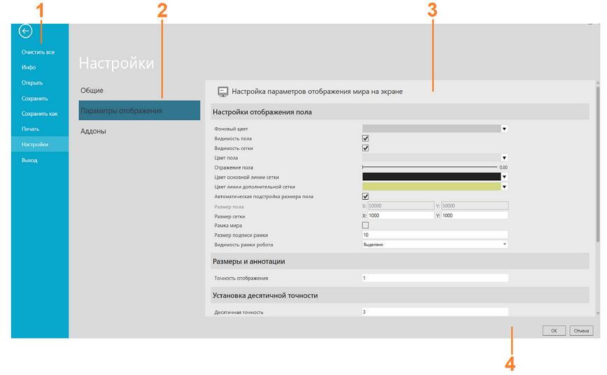

Окно Настройки позволяет открывать и сохранять файлы, а также редактировать настройки.

1. |
Панель навигации |
2. |
Разделы |
3. |
Экран |
4. |
Подтвердить/Отменить изменения |

Доступ
Чтобы получить доступ к окну Настройкиe:
·Перейдите на вкладку Файл.
Контекст
Контекст окна Настройки зависит от элемента, выбранного в области навигации.
Вы можете:
·Открывать и сохранять планировку.
·Печатать содержимое, отображаемое в 3D-мире и мире чертежа.
·Редактировать и сохранть настройки для выбора, навигации, рендеринга и языка пользовательского интерфейса.
·Редактировать систему измерения единиц и величин.
Команды
Следующие команды отображаются на панели навигации при переходе на вкладку Файл.
Название |
Описание |
|---|---|
Очистить все |
Очищает трехмерный мир от всех компонентов и открытой планировки. |
Инфо |
Показывает информацию о текущей планировке. |
Открыть |
Открывает собственный или поддерживаемый тип файла в качестве планировки в трехмерном мире. |
Сохранить |
Сохраняет изменения, внесенные в текущую планировку в 3D-мире, в существующий файл. |
Сохранить как |
Сохраняет текущую планировку в 3D-мире как новый файл. |
Печатать |
Предварительный просмотр и печать либо вида трехмерного мира, либо выбранной области чертежного мира. |
Настройки |
Отображает набор параметров/предпочтений для настройки Рационального Производства. |
Выход |
Закрывает Рациональное Производство. |
Бэкап
При включенном пределе резервных копий, файлы, которые должны быть удалены, определяются по дате модификации. Если включена опция Удалить старые резервные копии, файлы резервных копий удаляются при запуске приложения. Очищаемой папкой является либо выбранная папка резервного копирования, либо папка My Models, если папка резервного копирования не выбрана.
Примечание:
·С расширениями файлов резервных копий расширение с наибольшим номером считается самым последним.